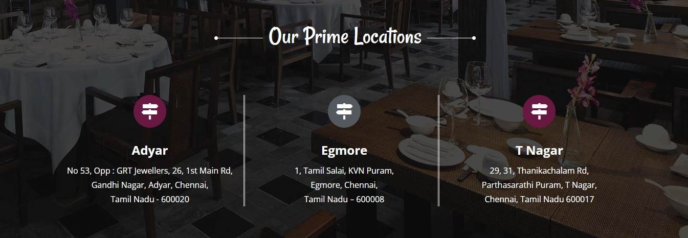

•⁃⁃⁃⁃⁃ DELICACIES SERVED OVER GENERATIONS WITH UTMOST CARE AND LOVE! ⁃⁃⁃⁃⁃•
Tale Of Tastes
Wow Foodie Restaurant unlocks the tales of traditions, tastes, and flavors that lingered in the taste buds and was passed down from generations to generations.
Established way back in the 1960s, the restaurant has come a long way delighting food lovers all over Chennai with tastes that surpassed the test of time.
Wow Foodie Restaurant has three branches in Chennai- at Adayar, Egmore & Tnagar. Located at prime locations, the restaurant is easy to access,
with valet parking facilities and sumptuous cuisines.
